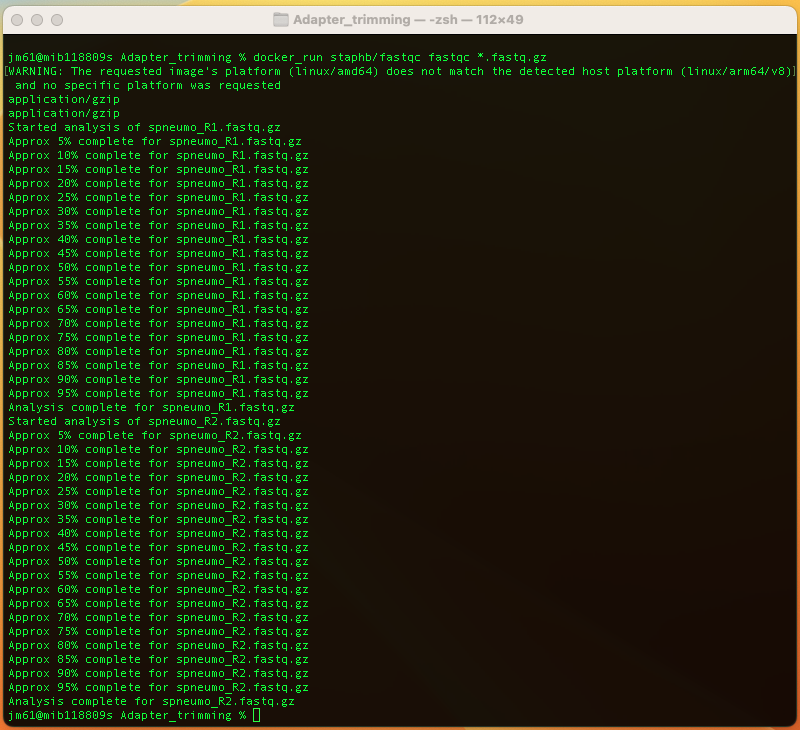
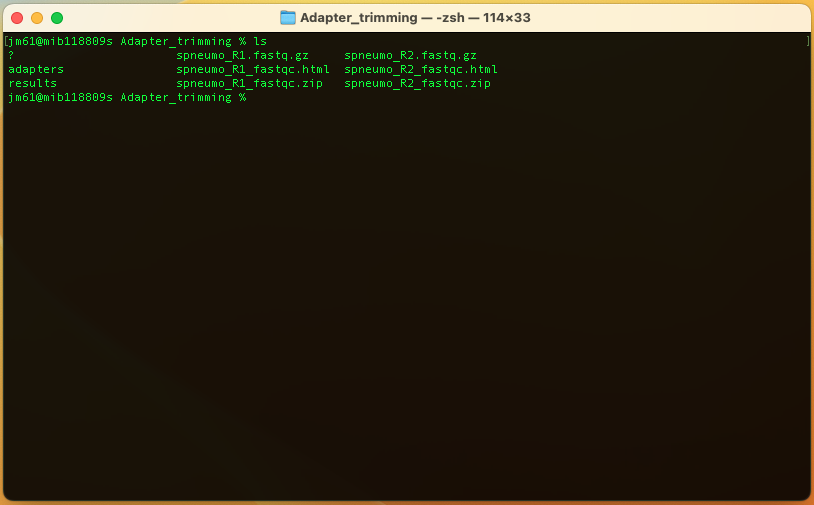
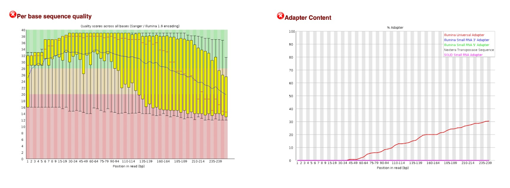
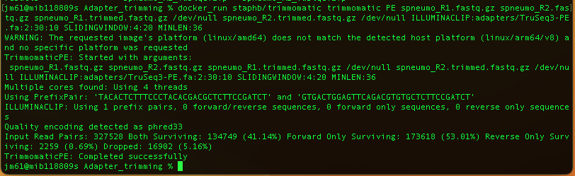

Before you being this section, navigate to the adapter trimming folder. You will use this folder and its contents to learn and practice this section.
Overview
Trimming of adapter sequences from short read data is a common preprocessing step during NGS data analysis. When performing paired-end sequencing, the overlap between forward and reverse read can be used to identify excess adapter sequences.
Illumina FASTQ file generation pipelines include an adapter trimming option for the removal of adapter sequences from the 3’ ends of reads. Adapter sequences should be removed from reads because they interfere with downstream analyses, such as alignment of reads to a reference. The adapters contain the sequencing primer binding sites, the index sequences, and the sites that allow library fragments to attach to the flow cell lawn. Libraries prepared with Illumina library prep kits require adapter trimming only on the 3’ ends of reads, because adapter sequences are not found on the 5’ ends.
Further reading
Adapter trimming: Why are adapter sequences trimmed from only the 3' ends of readsSeqPurge: highly-sensitive adapter trimming for paired-end NGS data
Tool(s)
We will be using FastQC and trimmomatic tools in this section. If you do not have these tools in your local machine, you can download them from a docker repository using the commands:
docker pull staphb/fastqc
docker pull staphb/trimmomatic
QC before removal of adapters
We will assess the quality of spneumo_R1.fastq.gz and spneumo_R2.fastq.gz. We will run the fastqc program on this read using the command:
docker_run staphb/fastqc fastqc *.fastq.gz

An explanation of this command is as follows:
docker_run:is a function to start a container. The function includes the following flags: docker run --rm=True -u $(id -u):$(id -g) -v $(pwd):/data "$@". To understand the docker_run function read the module [Data and Computational Platforms (Docker)]
staphb/fastqc: is the docker image
fastqc: is the tool
*.fastq.gz: input files; the (*) sign tells fastqc tool to run on files that end with fastq.gz in the folder
The Adapter_trimming folder will now have the following files

Look at the QC reports spneumo_R1.fastq.html and spneumo_R2.fastq.html. Let's explore spneumo_R2.fastq.html.

You can see the per base sequence quality and adapter content have failed for this read. This indicates that it contains adapter sequences. We will remove the adapter reads and perform QC on the trimmed read in the following section.
Adapter trimming: Paired end reads
We use “trimmomatic tool” to remove adaptors, to trim low quality reads and to remove short sequences.
To execute the trimmomatic tool, we will run the command:
docker_run staphb/trimmomatic trimmomatic PE spneumo_R1.fastq.gz spneumo_R2.fastq.gz
spneumo_R1.trimmed.fastq.gz /dev/null spneumo_R2.trimmed.fastq.gz /dev/null
ILLUMINACLIP:adapters/TruSeq3-PE.fa:2:30:10 SLIDINGWINDOW:4:20 MINLEN:36
An explanation of this command is as follows:
docker_run:is a function to start a container. The function includes the following flags: docker run --rm=True -u $(id -u):$(id -g) -v $(pwd):/data "$@". To understand the docker_run function read the section [Data, Tools and Computational Platforms (Docker)]
staphb/trimmomatic: is the docker image
trimmomatic: is the tool
PE: That it will be taking paired end file as input
spneumo_R1.fastq.gz: The first input file name
spneumo_R2.fastq.gz: The second input file name
spneumo_R1.trimmed.fastq.gz: The output file for surviving pairs from the _1 file
/dev/null: Discards the output file for orphaned reads from the _1 file
/spneumo_R1.trimmed.fastq.gz: The output file for surviving pairs from the _2 file
/dev/null: Discards the output file for orphaned reads from the _2 file
ILLUMINACLIP:adapters/TruSeq3-PE.fa:2:30:10: To clip the illumina adapters from the input file using the adapter sequences listed in TruSeq3-PE.fa. The numbers 2:30:10 tell trimmomatic how to handle sequence matches to the TruSeq3 adapters
SLIDINGWINDOW:4:20: To use a sliding window of size 4 that will remove bases if their phred score is below 20
MINLEN:36: This will discard and reads that do not have a at least 36 bases remaining after this trimming step
You will have the following output

Now run fastqc on the trimmomatic output files *.trimmed.fastq.gz using the command:
docker_run staphb/fastqc fastqc *.trimmed.fastq.gz
Quiz
What percent of reads did you discard from your sample?
What percent of reads did you keep?
How different is the HTML report for the spneumo_R1.trimmed.fastq.gz/spneumo_R2.trimmed.fastq.gz from the spneumo_R1.fastq.gz/spneumo_R2.fastq.gz?